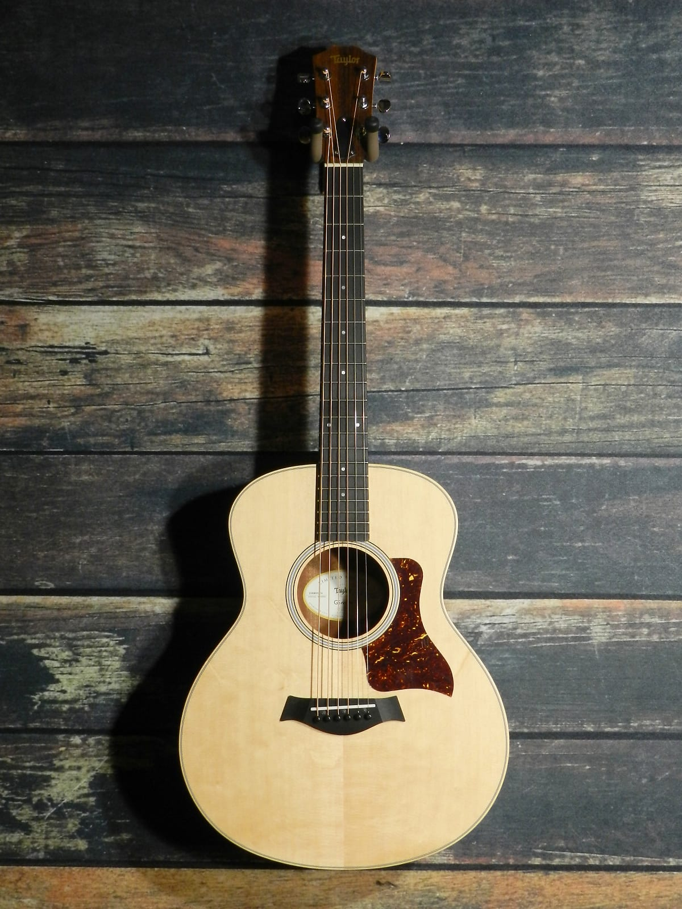

Hi, my name is Carlo Jason Capuz. I am currently a junior undergrad at UNH-Manchester, majoring in Computer Information Systems.
I am Filipino. My family moved to the United States of America on May 11, 2011.
I speak 3 languages - English, Filipino(Tagalog) and Spanish (Limited working proficiency).
After I graduated high school, I took a year off to figure out what I'm going to take in college. I explored and researched different careers in the technology field. Since I am passionate about computers, I decided to explore programming and computer science. 3 years ago, I took an intro to computer science. They used C language. I liked the class and I decided to study software development full time.
Hi, my name is Carlo Jason Capuz. I am currently a junior undergrad at UNH-Manchester, majoring in Computer Information Systems.
I am Filipino. My family moved to the United States of America on May 11, 2011.
I speak 3 languages - English, Filipino(Tagalog) and Spanish (Limited working proficiency).
After I graduated high school, I took a year off to figure out what I'm going to take in college. I explored and researched different careers in the technology field. Since I am passionate about computers, I decided to explore programming and computer science. 3 years ago, I took an intro to computer science. They used C language. I liked the class and I decided to study software development full time.
Education
2019-2021
Bachelor of Science in Computer Information Systems
University of New Hampshire at Manchester
The University of New Hampshire at Manchester is the urban campus of the public University of New Hampshire and is located in Manchester, New Hampshire. It was established in 1985 as the sixth college of the University of New Hampshire.
2017-2019
Associate of Science in Information Technology - Software Development
NHTI, Concord's Community College
NHTI, Concord's Community College is a public residential community college in Concord, New Hampshire. It is part of the Community College System of New Hampshire and is accredited by the New England Association of Schools and Colleges.
2011-2015
High School Diploma
Manchester High School West
Manchester High School West, known as West High or West, is a public high school located in Manchester, New Hampshire. According to the Blue Book: Manchester High School West Hand Book, the school was officially opened in September 1923 as a grade school and high school, hosting the seventh and eighth grades.
Education
2019-2021
Bachelor of Science in Computer Information Systems
University of New Hampshire at Manchester
The University of New Hampshire at Manchester is the urban campus of the public University of New Hampshire and is located in Manchester, New Hampshire. It was established in 1985 as the sixth college of the University of New Hampshire.
2017-2019
Associate of Science in Information Technology - Software Development
NHTI, Concord's Community College
NHTI, Concord's Community College is a public residential community college in Concord, New Hampshire. It is part of the Community College System of New Hampshire and is accredited by the New England Association of Schools and Colleges.
2011-2015
High School Diploma
Manchester High School West
Manchester High School West, known as West High or West, is a public high school located in Manchester, New Hampshire. According to the Blue Book: Manchester High School West Hand Book, the school was officially opened in September 1923 as a grade school and high school, hosting the seventh and eighth grades.
Skills
HTML
85%
CSS
75%
JavaScript
55%
PHP
75%
Python
80%
C#
85%
Java
65%
SQL Server
60%
Experience
Click the button below to see my internship experience at NHTI, Concord's Community College.
When I'm not programming, actually even when I'm programming, I like to listen to music because I love music. When I'm programming, I like to listen to 80's synthwave or lo-fi playlists. My top 3 artists: Ed Sheeran, The Weeknd, and Joji.
When I'm not programming, actually even when I'm programming, I like to listen to music because I love music. When I'm programming, I like to listen to 80's synthwave or lo-fi playlists. My top 3 artists: Ed Sheeran, The Weeknd, and Joji.
I play guitar and ukulele. I have a Lanikai LU-21C (broken bridge), Fender FA-100 (broken bridge), Taylor GS Mini-E, Ibanez GRX20Z GIO. I'm part of the music club at UNHM. When my favorite artists release new music, I would try to play it on guitar as soon as possible. Sometimes I like to challenge myself by learning the song by ear.
I play guitar and ukulele. I have a Lanikai LU-21C (broken bridge), Fender FA-100 (broken bridge), Taylor GS Mini-E, Ibanez GRX20Z GIO. I'm part of the music club at UNHM. When my favorite artists release new music, I would try to play it on guitar as soon as possible. Sometimes I like to challenge myself by learning the song by ear.

I play PC games like Dota 2, Apex Legends, etc. I have been playing Dota 2 for almost 8 years. I kind of have this love/hate attitude towards the game because you never know what kind of team you're going to get. Playing Dota 2 is a good way to enhance your team player mentality because it's a team game and you can't win the game by playing solo/independent, although in rare cases you can.
I play PC games like Dota 2, Apex Legends, etc. I have been playing Dota 2 for almost 8 years. I kind of have this love/hate attitude towards the game because you never know what kind of team you're going to get. Playing Dota 2 is a good way to enhance your team player mentality because it's a team game and you can't win the game by playing solo/independent, although in rare cases you can.